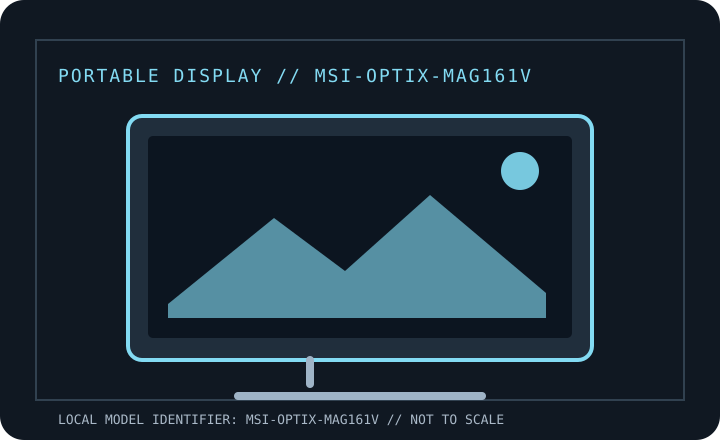

[ INDIVIDUAL COMPONENT // DISPLAYS ]
MSI Optix MAG161V Portable Monitor
Manufacturer-specific portable monitor record. Verify the full rear-label SKU, region and documentation revision before connecting power or relying on a maximum mode.

IDENTIFICATION: Portable computer monitor SKU with a unique model record. Match the rear label and regional suffix to the manufacturer's product page/manual; similarly named models may use different ports or power behavior.
Specifications
| Catalog subcategory | Portable displays |
|---|---|
| Exact product / family | MSI Optix MAG161V Portable Monitor |
| Panel / diagonal | 15.6-inch IPS-grade LCD |
| Native resolution | 1920 × 1080 (Full HD) |
| Native refresh / maximum | 60 Hz |
| Brightness (typical) | 180 cd/m² typical |
| USB-C interface | One USB-C video/power input; DP Alt Mode required for USB-C video. No specified USB Power Delivery passthrough to a laptop. |
| HDMI interface | One mini-HDMI video input; supply monitor power separately over USB-C when using HDMI. |
| Power / USB Power Delivery | External USB-C power input (MSI does not specify notebook charging output or an internal battery); use a capable power source, especially at high brightness. |
| OSD / controls | Physical monitor buttons operate the onboard OSD; no required host utility for normal video. |
| Stand / mounting | Slim portable panel uses supplied protective cover as a rest/stand; no integrated height-adjustable stand or VESA mount is specified. |
Host, OSD & compatibility notes
USB-C source must support DisplayPort Alt Mode; mini-HDMI supports compatible laptops, cameras or consoles with USB-C power attached. OS does not substitute for the required video output capability.
Model-specific caveat: This is the 60 Hz MAG161V, not later MAG161-series gaming variants. At 180 cd/m² it is dimmer than many modern portable displays; HDMI signal does not supply its power.
Field use & preservation
Protect the LCD/touch surface in transport, avoid loading the USB-C or HDMI sockets sideways, and test video, power and touch (where fitted) as separate signal paths. Keep the correct cable and power adapter with the monitor.
Record the rear-label model/serial, included cover/stand, cable and adapter ratings, signal timing, OSD configuration, panel condition and any repaired or substituted accessories. Do not open the enclosure; use the manufacturer's service procedure and a qualified technician.
Manufacturer documentation & sources
- MSI — Optix MAG161V official overviewOfficial MSI product overview for the portable monitor and feature context.
- MSI — Optix MAG161V official specificationsManufacturer specification page for panel, resolution, brightness, refresh and ports.